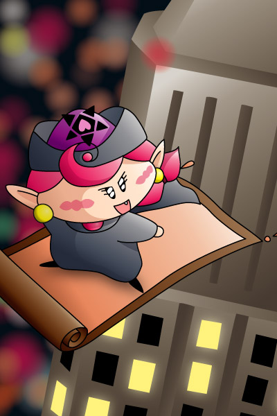

こんな凛々しいアクミの姿もそろそろ見納め！？
アクミ「ダアク様、待っていてください。今から人間界に悪の華を咲かせます！」
わかりにくいかもしれませんが、夜の都会をじゅうたんで飛ぶアクミというシーンってことで(^^;。手前のビルはちょっと小さすぎたかなぁ……これだとアクミが巨大になってしまいますね。アクミは帽子のデザインが特に難しいです。帽子のためだけにDVDの見直しまで…(汗)。
１００話（「我が名はダアク」）放送の直前に描いた絵です。「ごおるでん」で今度こそダアクがしっかり封印されちゃったらアクミはどうなってしまうんだろうと思いながら…。この当時は私は、１００話での「ダアクに裏切られたアクミ」という残酷なシーンは考えてもみなかったのでした。
(2004/3/21)